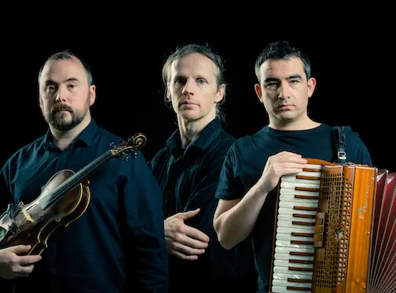

Nieuws ·
Concert Ierse dichter/zanger Lorcan MacMathúna

Op donderdagavond 18 april 2024 treedt de Ierse ean-Nós-zanger Lorcan MacMathúna op in het Vicentiuskerkje in Velp bij Grave. We gaan met dit concert terug naar de oervorm, de oorsprong van de Keltische/Ierse muziek. Dit concert wordt georganiseerd door Stichting Kunst in het Kerkje. Het concert begint om 20.00 uur en vindt plaats op het adres Pastoor Loefsweg 1 in Velp bij Grave. Van tevoren reserveren is aan te bevelen en kan via de site www.kunstinhetkerkje.nl.
Vernieuwende muziek-erfgoed
Met vader Séamus als dwarsfluitist, zanger en pleitbezorger ter overlevering van Iers-Keltisch muziek komt Lorcan MacMathúna (Cork, 1976) uit een muzikaal nest. Hij heeft zich ontwikkeld tot beste Sean-Nós zanger van zijn generatie. Deze zangstijl, veelal gezongen in het oud-Ierse Gaelic, is intens, emotioneel geladen en expressief. In de door generaties overgeleverde songs is de mystieke, Keltische sfeer van legendes vol romantiek en heroïek bewaard gebleven. Als illustratief geldt Lord Of The Rings, de succesvol verfilmde fantasy bestseller van J.R.R. Tolkien.
In die geest zet Lorcan MacMathúna de Sean-Nós traditie voort als componist, arrangeur en improviserend vocalist. Samen met zielsverwanten vernieuwt hij zijn Gaelic repertoire tot authentieke zang, instrumentatie, lyriek en danschoreografieën. Met Rógaire Dubh (2007) maakt hij naam als Sean-Nós vertolker. Op bellettriefestival IMRAM (2008) zingt hij Ierse liefdesliederen uit de Middeleeuwen in The Arrows That Murder Sleep. Zijn Tásc Is Tuairisc (2009) verhaalt van vermetele expedities van Lord Franklin, gevolgd door Want And Longing (2010) met Common Tongue en Dubh Agus Gheal: Darkness and Light – Loric Colloquies (2011) met Northern Lights. Zijn avantgardistische An Táin (2012) grijpt terug op een epos.
Zanger Lorcan MacMathúna
De BBC registreert Derry To The Sea (2013), zijn suite voor kolossaal orkest en koor in opdracht van de Fleadh Cheoil na hÉireann die in première gaat in Saint Columb’s Cathedral (Derry). Zijn Battle of Clontarf (2014) ziet het licht op het Temple Bar Trad Fest in Saint Michan’s Church (Dublin). Van hetzelfde jaar dateert Preabmeadar, zijn compositie met dans en zang. In 1916 – Visionaries and Their Words zet hij poëzie op muziek ter 100-jarige herdenking van de voor Ierland historisch cruciale Easter Rising (Paasopstand).
Zanger Lorcan treedt in het Vincentiuskerkje in Velp op samen met kompanen Martin Tourish op accordeon en Daire Bracken op viool.